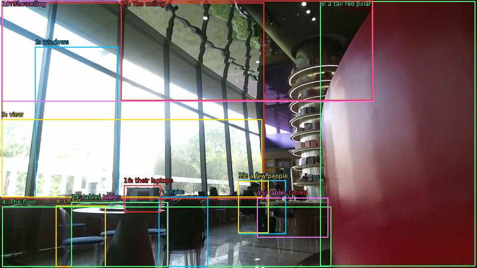

The image shows the interior of a modern restaurant or cafe. The room has large windows that let in natural light and offer a view of the trees and buildings outside. The floor is made of marble tiles and there are several tables and chairs scattered throughout the space. On the right side of the image, there is a tall red pillar with a spiral staircase leading up to it. The ceiling is decorated with black and white geometric patterns. There are a few people sitting at the tables and working on their laptops. The overall atmosphere of the space is bright and airy.

Original · Caption raw · Grounding raw · Koordinate
Številke so lokalni ID regije. Dolge slikovne oznake so skrajšane; spodaj so celotne fraze. Napovedane regije se lahko prekrivajo ali opisujejo skupine.
| ID | Celotna fraza | bbox xyxy |
|---|---|---|
| 1 | The room | [3.359999895095825, 5.130000114440918, 531.3599853515625, 400.4100036621094] |
| 2 | windows | [70.55999755859375, 94.77000427246094, 237.59999084472656, 398.2500305175781] |
| 3 | view | [3.359999895095825, 240.57000732421875, 527.5199584960938, 397.71002197265625] |
| 4 | The floor | [4.319999694824219, 416.6100158691406, 666.719970703125, 537.5700073242188] |
| 5 | several tables | [143.52000427246094, 407.4300231933594, 338.3999938964844, 537.030029296875] |
| 6 | several tables | [517.9199829101562, 398.2500305175781, 660.9599609375, 478.1700134277344] |
| 7 | chairs | [319.1999816894531, 396.6300048828125, 418.0799865722656, 537.5700073242188] |
| 8 | chairs | [112.79999542236328, 414.9900207519531, 212.63999938964844, 537.5700073242188] |
| 9 | a tall red pillar | [644.6400146484375, 2.9700000286102295, 956.6399536132812, 536.4900512695312] |
| 10 | The ceiling | [4.319999694824219, 1.350000023841858, 750.239990234375, 204.3900146484375] |
| 11 | The ceiling | [243.36000061035156, 1.350000023841858, 749.2799682617188, 202.77000427246094] |
| 12 | a few people | [479.5199890136719, 363.1500244140625, 575.5199584960938, 471.6900329589844] |
| 13 | a few people | [479.5199890136719, 364.77001953125, 540.0, 469.530029296875] |
| 14 | tables | [143.52000427246094, 407.4300231933594, 337.44000244140625, 537.030029296875] |
| 15 | tables | [517.9199829101562, 398.7900085449219, 660.9599609375, 478.1700134277344] |
| 16 | their laptops | [249.1199951171875, 373.95001220703125, 324.9599914550781, 427.95001220703125] |